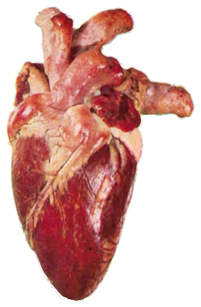
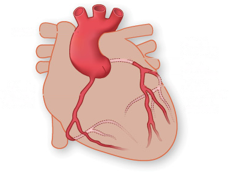
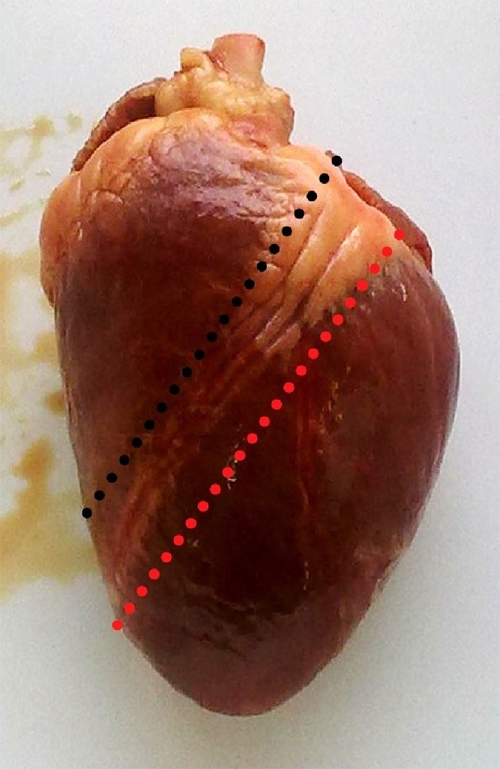
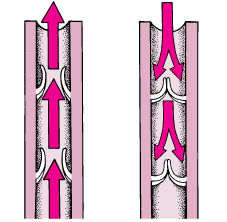

Crec que el cor té cavitats (cambres) per dins.
Hi ha algun punt on la sang neta i la sang bruta es barregen? Sí No
Per què ho creus?

1234Paraules per triar (n'hi ha una per número): aorta · artèria pulmonar · vena cava inferior · vena cava superior
- 1
- 2
- 3
- 4

① Escriu el nom dels 4 vasos grans a la llegenda de la foto. Quins entren sang al cor i quins la treuen? Com ho saps?
② Prem el cor amb el dit i deixa'l anar. La paret és tova com un fetge o ferma i elàstica com un múscul? Per quina raó el cor ha de ser múscul i no un tub rígid?
③ El cor batega tota la vida sense parar. Per quina raó necessita el seu propi reg de sang (les coronàries), si per dins ja hi passa sang contínuament?
Material per grup: 1 cor de porc o de xai · safata de dissecció · guants · tisores de punta rodona (o bisturí) · pinces · 4 etiquetes de colors · paper de cuina.
- Poseu-vos els guants. El cor es queda SEMPRE dins de la safata.
- Abans de tallar, feu la secció 1: mireu-lo per fora i toqueu-lo.
- Localitzeu el solc (la ratlla de greix que baixa en diagonal per davant): separa els dos ventricles. NO talleu just a sobre del solc.
- Feu el primer tall a un costat del solc, seguint una de les dues línies de punts de la foto. Talleu de dalt a baix, poc a poc, sense arribar a la punta.
- Obriu-lo com un llibre i mireu-hi dins. Buideu els coàguls amb les pinces si cal.
- Feu el segon tall a l'altre costat del solc i obriu l'altre ventricle.
- Poseu una etiqueta de color a cada cavitat que trobeu.
- En acabar: el cor a la bossa de residus, safata i eines a la pica, guants fora i mans amb sabó.
⚠️ Seguretat: talleu sempre allunyant el fil de les vostres mans i de les dels companys. Mai amb el cor a la mà: sempre a la safata. Res de menjar ni beure a la taula. Si us talleu, aviseu de seguida.


Quan escoltes un batec no sents un cop, sinó dos: lub — dub. El so no el fa la sang movent-se: el fan les vàlvules en tancar-se de cop, com una porta que peta.
El lub són les vàlvules d'entrada (les que hi ha entre cada aurícula i el seu ventricle) quan es tanquen, just quan el ventricle comença a estrènyer. El dub són les vàlvules de sortida (a la boca de l'aorta i de l'artèria pulmonar) quan es tanquen, just quan el ventricle acaba d'estrènyer.
① Quantes cavitats comptes? Com es diuen les de dalt i com les de baix?
② Passa el dit pel septe. Què separa exactament, i per quina raó és important que no tingui cap forat?
③ Busca les vàlvules amb les pinces i mou-les. Què impedeixen que passi? I quina de les dues (entrada o sortida) fa el so «lub»?
Escriu el nom al costat de cada cambra, amb una fletxa. Si no recordes un nom, mira el vocabulari de la primera pàgina.
① Toca la paret dels dos ventricles i compara-les. Quina és més gruixuda? Explica per quina raó, pensant fins on ha d'arribar la sang de cadascun.
El cor són, de fet, dues bombes dins del mateix òrgan. La dreta envia la sang als pulmons, que són a tocar i tenen capil·lars finíssims: necessita poca força. L'esquerra l'envia a tot el cos, fins al dit del peu i fins al cap: per això la seva paret és molt més gruixuda. Ho havies dit així?
② Ara que ja saps quin costat empeny més fort: quin dels dos bufa la sang cap als pulmons? Escriu el nom de l'artèria per on surt.
Comença pel número 1 allà on la sang arriba al cor pobra en oxigen.
L'Arnau té 14 anys i va néixer amb un forat al septe que separa els dos ventricles. Símptomes: corrent es queda enrere molt abans que els companys i respira molt de pressa; en repòs està perfectament bé. El metge li sent un bufec (un soroll de sang que passa per on no hauria de passar). Els llavis i les ungles li tenen el color normal: no es posa blau.
La Nadia té 58 anys i té les artèries coronàries parcialment tapades per plaques de greix. Símptomes: quan puja escales li fa un dolor opressiu al pit i s'ha d'aturar; en aturar-se, al cap d'un parell de minuts el dolor desapareix del tot.
Tria UN dels dos casos i respon només aquell.
① Per quina raó aquesta persona té aquests símptomes, i per quina raó apareixen fent esforç i no en repòs? Explica el mecanisme, no el símptoma.
② Al cas A hi ha una dada que sorprèn: l'Arnau no es posa blau, tot i tenir els dos costats connectats. Quin costat del cor empeny més fort? Cap a on ha de passar la sang pel forat, doncs? (Si has triat el cas B, respon què passaria si una coronària es tapés del tot.)
Un portaveu de cada grup diu una cosa que ha vist al cor i que no s'esperava. Després tornem a la pregunta del principi: per quina raó el cor té 4 cavitats i no 2? Escriu aquí la resposta de la classe, amb les teves paraules:
La setmana que ve resoldrem l'enigma de la gràfica del cor del Marc Fontana, el corredor. Mesura't el pols en repòs i porta la xifra apuntada aquí.
La meva FC en repòs: batecs/min. L'he mesurat a: (canell / coll)
⏱️ 3 min · No cal cap aparell: compta el pols al canell durant 15 segons i multiplica per 4. Fes-ho asseguda i tranquil·la.